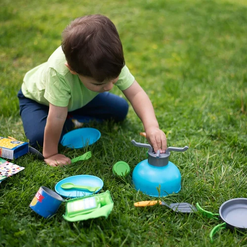
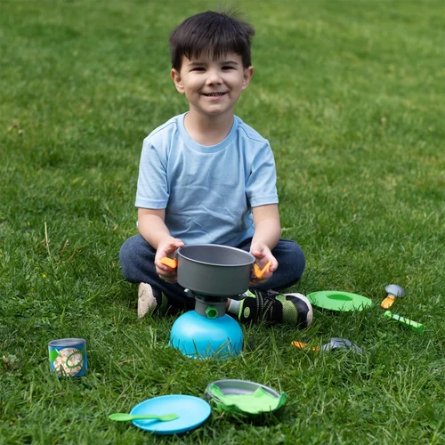
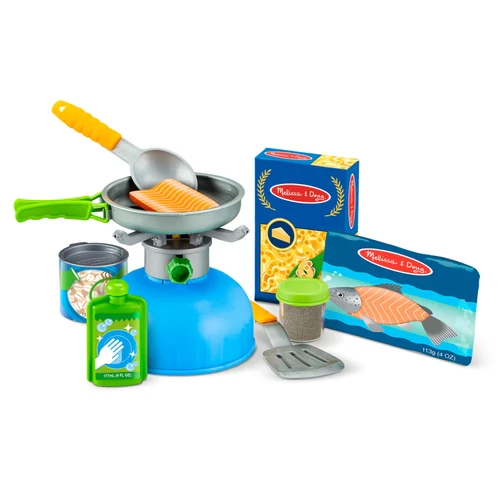
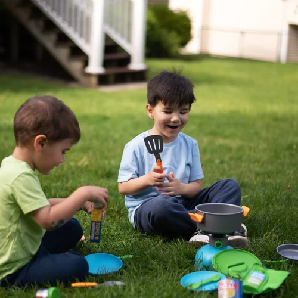
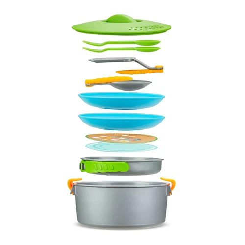
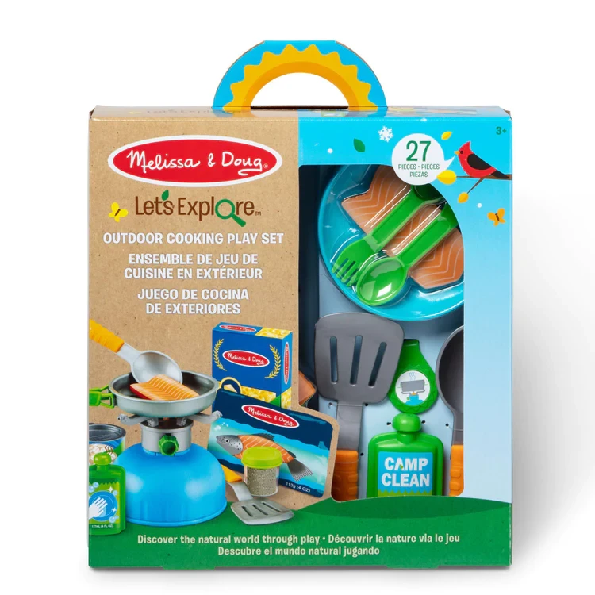

Let’s Explore Outdoor Cooking Play Set
Felt Play
R47527-piece pretend play camp cooking set with play burner, nesting cookware, folding utensils, and play foodIncludes a durable play burner with adjustable “flame,” nesting pot, pan, 2 plates, 2 sporks, double-sided pot and pan insert, dish soap bottle, towel, collectible medallion, mesh storage bagPlay food includes spice jar, felt oatmeal in can with lid, felt tortilla in pouch, felt mac and cheese in box, felt rice and beans in pouch, wooden salmon in pouchLet’s Explore by Melissa & Doug encourages kids to connect with the natural world through imaginative play, and to discover the joy of outdoor adventures that instill curiosity and confidence while inspiring them to say, “Let’s Explore”Makes a great gift for ages 3- to 6-year-olds, for hands-on, screen-free playItem # 30802
Enquire about this product






Let’s Explore Outdoor Cooking Play Set at Kids Corner KZN
Let’s Explore Outdoor Cooking Play Set is part of our Felt Play collection. Kids Corner KZN stocks toys for learning, pretend play, creative play, gifting and everyday childhood discovery in South Africa.
Browse more Felt Play toys